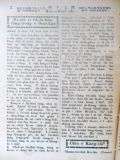
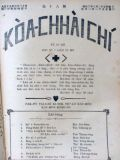
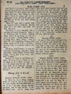
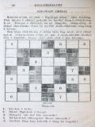
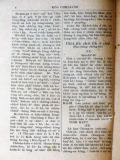
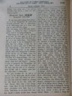

Languages
台文
｜
中文
｜
日本語
｜
English
字體
小
｜
中
｜
大
首頁
/
白話字數位典藏
白話字數位典藏全文檢索
查詢模式
選擇年代
清國時代(1885-1895)
日本時代(1895-1945)
戰後(1945-1969)
1885-1895
1896-1905
1906-1915
1916-1925
1926-1935
1936-1945
1946-1955
1956-1965
1966-1969
1970-1980
1980-1990
1990-2000
2000-2010
2010-
選擇文類
詩
散文
小說
戲劇
傳記
選擇作者
陳清忠
陳清義
編輯部
柯設偕
吳天命
明有德
偕叡廉
周天來
劉華義
王守勇
林茂生
陳添旺
王占魁
柯維思
賴仁聲
陳瓊琚
雪峰逸嵐
吳清鎰
郭水龍
蕭樂善
許水露
葉金木
陳金然
章王由
廖得
鄭連坤
潘道榮
楊士養
梁秀德
劉約翰
周淑慧
高金聲
林燕臣
黃六點
蔡愛義
許有才
主筆
巴克禮
陳鳩水
郭朝成
張基全
陳明清
陳能通
拾穗生
顏振聲
卓恆利
傳道局
胡文池
劉主安
鄭兒玉
李水車
Google Search
Yahoo Search
全部
刊名
標題
標題(教羅)
全文
全文(教羅)
作者
第81頁，共93頁(共1,848筆資料) 0.67721390724182sec
1
...
79
80
81
82
83
...
93
To Page
GO
文字列表
圖文列表
排序
日期
文類
刊名
作者
影像
[1927-5 芥菜子 文類-選擇文類 作者-編輯部/Phian-chip-pō͘͘]
(1)
新部員 [ Sin Pō͘-oân ]
新部員 今年北部教會報的部員是：- 偕叡廉 陳清義 蕭安居 張基全 陳瓊琚 柯設偕 陳清忠 其中： 主理事 偕叡廉 記事 陳清忠 按呢紹介予列位知。...
[1927-6 芥菜子 文類-選擇文類 作者-編輯部/Phian-chip-pō͘͘]
(1)
封面 [ Hong-bīn ]
芥菜子 第17號 1927 年 6月25號 「天國親像一粒芥菜子，人提去掖佇伊的園；這个是百項種子的第一細；到伊大叢，是較大攏總的菜蔬，紲成做樹，致到空中的鳥來歇伊的枝」 馬太13章31節 「咱若有信親像一粒芥菜子，恁就欲共這个山講，對遮徙去遐，ia̍h欲徙去；閣恁teh欲無一項袂。」 馬太17章20節 北部台灣基督長老教會 教會公報 內容 1. 彼得佇所羅門籠中的說教 陳清義 2. 真的工程 陳清忠 譯 3. 活活tâi 偕叡廉 4.論佇家庭中祈禱的力 ...

[1927-6 芥菜子 文類-散文 作者-陳清義/Tân Chheng-gī]
(1)
彼得佇所羅門籠中的說教 [ Pí-tek tī Só-lô-bûn lông-tiong ê Soat-kàu ]
彼得佇所羅門籠中的說教 使徒 3章12節到路尾。 彼得佮約翰佇聖殿的suí門醫治跛跤的。猶太人真奇怪，走來就近in，聚集佇所羅門的 léng-lông。這个籠大概是佇聖殿的東爿，卻聖經無講所羅門的籠是佇佗一爿，照約瑟佛的冊所記論聖殿遮的籠。有一籠佇聖殿的東爿，就是約瑟佛所建置，差不多是這个。 彼得看見眾人聚集佇遐，真奇怪，注目看in。就對in說教，請來研究佇這篇的說教中。有教示聽眾啥物，大概通講有4款，排列佇下底。 1、愛予大家知，醫治跛跤的事，毋是對家己的權能，是對信耶穌。 當時的猶太人，真奇怪。看彼得是人，怎樣會行這款。所以愛看伊，彼得講毋是對阮的才能，也毋是對阮的敬虔，來予這...
[1927-6 芥菜子 文類-散文 作者-柯設偕/Koa Siat-kai]
(1)
台灣的山佮溪 [ Tâi-oân ê soaⁿ kap khoe ]
台灣的山佮溪 佇台灣，上一萬(10000) 尺以上的山有48 个。 這tia̍p袂攏總寫遐的名佇遮；總是愛寫幾若个。 新高山 13075 尺 Chhù高山 12972 尺 秀姑巒山 12650 尺 Má-pho͘-lah-su山 12560 尺 南湖大山 12531 尺 實在佇咱台灣有真懸的山。 也台灣的溪，也是真濟條。 獨水溪 42.里(日本里) 下淡水溪 39.7里 曾文溪 33.7里 淡水河 33.1里 大甲溪 30.里 咱台灣的山水通講袂bái，不止有通呵咾...
[1927-6 芥菜子 文類-選擇文類 作者-傳道局/Thoân-tō-kio̍k]
(1)
總會佮修養會延期 [ Chóng-hoē kap Siu-ióng-hoē iân-kî ]
總會佮修養會延期 本年度北部傳教師總會佮修養會，本然預定是佇7月5日欲開，今愛延期到秋天，大概十月間。延期的理由有幾若項： 一項是請無講師；閣一項家己的宣教師有的欲去內地；也閣一項母會的總巡佮新的宣教師，秋天欲到位。按呢延期到彼tia̍p較合。向望到彼tia̍p也有通得著一位講師對內地來，向望予大家較有利益。 傳道局。...

[1927-7 芥菜子 文類-選擇文類 作者-編輯部/Phian-chip-pō͘͘]
(1)
封面 [ Hong-bīn ]
芥菜子 第18號 1927 年 7月25號 「天國親像一粒芥菜子，人提去掖佇伊的園；這个是百項種子的第一細；到伊大叢，是較大攏總的菜蔬，紲成做樹，致到空中的鳥來歇伊的枝」 馬太13章31節 「咱若有信親像一粒芥菜子，恁就欲共這个山講，對遮徙去遐，ia̍h欲徙去；閣恁teh欲無一項袂。」 馬太17章20節 北部台灣基督長老教會 教會公報 內容 1、三个宣教師 偕叡廉 2、重頭生的要緊 陳清義 3、「我攻擊牧者羊群就四散」 陳添旺 4、佈道的祕訣 柯設偕 ...
[1927-7 芥菜子 文類-散文 作者-偕叡廉/Kai Jōe-liâm]
(1)
三个宣教師 [ Saⁿ ê Soan-kàu-su ]
三个宣教師 百外年前有三个英國的宣教師去佇印度設教，就是Ka-lí、Hoâ，佮Má-sa先生(Careg，Ward，Manhman)。這三人立約講in逐日所做若有毋著的所在到日暗著對大家歡喜認，閣in欲將in所有的全部獻予上帝，做伊的聖會的路用。 雖然拄著濟濟款的窘逐、危險、病痛，佮試煉，in也無相離開，反轉嚴守in所入的約。 Ka-lī 先生會講30外款的腔口。伊有用30款的土音來譯新、舊約聖經。這款的才情，世界oh得揣。若是Ka-lī先生gâu譯聖經，Hoâ先生gâu設法印冊，所趁的錢合共有¥ 80,000，iáu-kú伊將所趁的金照約，全部獻予上帝。In有建築一間學校彼時...
[1927-7 芥菜子 文類-散文 作者-柯設偕/Koa Siat-kai]
(1)
佈道祕訣 [ Pò͘-tō pì-koat ]
佈道祕訣 現時正是佈道的好機會，因為較無落雨，閣月光暝的時，欲佇野外聚集實在真好勢。 所以講，現時是佈道的好時期。 耶穌早前猶原是四界行，四界聚集，因為按呢會予人較趣味，較心適。 所以咱現時猶原著學這个方法，來大大鼓舞佈道的工，通曠闊天國佇咱台灣的中間！ 今論佈道的方法有濟濟款。有的吟詩，有的用樂器，有的演說，濟濟款。卻是照各人的趣味，各人的經驗來創看佗一項較有效果。 論佈道所欲講的，我看有3項較大要緊。就是：- 1、神。(上帝) 2、罪。 3、救。 抑是講：- 1、信上帝。 2、反悔罪。 3、靠耶穌。 這3項是基督教根本的道理。所以真大要緊著拆明予粗粗信的人...
[1927-7 芥菜子 文類-散文 作者-明有德/Bêng Iú-tek]
(1)
時刻我欠用主 [ Sî-khek goá khiàm-ēng Chú ]
時刻我欠用主 這首是New york 的 hawks婦人所做的。伊出世佇1877年，是美國浸禮教的會友，37歲的時所寫--的。伊有做真濟的詩，逐禮拜落佇幾若位主日學的雜誌。佇所做的詩的中間，伊的意思是愛予人看見主所以伊的死攏是道理滿滿。若是別人所做的，是予人讀了會知彼个做的人的境遇，好額抑是sàn-hiong。 Hawks婦人所做的，人看了毋知伊的境遇。伊所寫的詩攏有合佇貧賤富貴的欠缺。親像「時刻我欠用主」意思是毋但一刻久欠用主nā-tiāⁿ，著不時、無歇愛佮主親近。...
[1926-8 芥菜子 文類-散文 作者-陳清忠/Tân Chheng-tiong ]
(2)
耶穌的十字架 [ Iâ-so͘ ê si̍p-jī-kè ]
耶穌的十字架 現時愛耶穌的天國的人，伊的數是濟，總是歡喜pē伊的十字架的人是到極少。 愛求耶穌慰安的人，也是濟，若是求伊的苦痛的人嘛是少。 有濟濟人佮耶穌同桌，總是少少人欲佮伊saⁿ-kap守禁戒，(禁戒) 萬人向望愛欲佮耶穌saⁿ-kap享樂，但是為著耶穌來忍受萬事的人是真少。 愛求耶穌所peh的餅的人是濟，若是歡喜lim伊的苦杯的人是少。 濟濟人尊敬伊的神跡，少少人忍受「恥辱的十字架。 無苦痛的中間，疼耶穌的人是真濟；閣再耶穌賞賜in 慰安的時，人人呵咾，人人感謝。毋kú設使耶穌若離開in tiap-á久，就隨時跋落不...

[1926-8 芥菜子 文類-散文 作者-陳清忠/Tân Chheng-tiong ]
(2)
名人的祈禱 [ Bêng-jîn ê kî-tó ]
名人的祈禱 （I） Samuel Johnson (1709－1784) O主ah，你的手掌管生佮死，對佇你的氣力我通得著徛在，也對佇你的恩典通得著赦免，求你用憐憫àⁿ落來看我。你所命令我著做的義務，到今我有放做袂要緊，空空過日，全然無勞碌來完成你的旨意，求你赦免我這款貧惰的罪。求你予我會記得逐日是你所賞賜--的，應該著照你的命令來用彼日。所以求你予7我深深反悔貧惰的罪，通對你得著恩典，也通經過，你猶饒我的性命佇世間的中間，也來勤勉勞碌佇你的聖旨，倚靠耶穌基督。心所願。 (II) Anselm (1033－1109) O我的主，我的上帝ah，求你賞賜我全心所意向愛欲得...

[1926-1 芥菜子 文類-選擇文類 作者-編輯部/Phian-chip-pō͘͘]
(2)
十字語猜 [ SI̍P-JĪ-GÚ CHHAI ]
十字語猜 近來佇逐所在「十字語猜」真流行。這款的猜！不止會加添人的趣味佮利益。本報的紙面若會容允，常常愛出這款猜來加添讀者學聖經的機會。 欲開這款的猜著用鎖匙，所以請列位參照下面所拜的鎖匙，緊緊來開這个金庫，通成做一个大富翁： (圖格) 鎖匙 坦直 1. 路得的ta-ke。 2. 使徒雅各的老爸。 3. 上帝對天落甚物？ 4. 尼哥底母稱呼耶穌甚物？ 5. 猶太人佮tah落的人無往來？ 6. 耶穌用甚物約予咱？ 7. 新約的一本。 8. Chī-chuī予人用石tím死？ 9. 得著大恩的...
[1926-1 芥菜子 文類-選擇文類 作者-雪峰逸嵐/Soat-hong Iat-lâm]
(2)
自高的會議 [ CHŪ-KO Ē HOĒ-GĪ ]
自高的會議 捌一擺，指頭á teh相爭做-大，攏毋相讓；姑不將開會議來解決這層事。推薦大頭拇做會長，就請各人講起in的意見。Kí指攏無推辭，起來就講。「除大頭拇以外最大路用--ê就是我；無論人欲問路，抑是欲共人講甚物，攏著我共伊指點；設使若無我，欲用甚物來共人講leh？這是我最有路用的證據，我應該著做大。」講了坐落去。中指起來就講，「我毋免講別物，若kan-ta看我的身軀chiah nih懸，chiah nih大，恁攏比我較矮，這就通證明我應該，著坐大位lah！」無名指起來就講，「四位的中間是我第一尊貴，若有結婚式抑是別物的裝飾品就攏掛帶我的身軀。你看現代的社會，攏是榮光，尊貴，好...
[1926-7 芥菜子 文類-散文 作者-蕭樂善/Siau Lo̍k-siān]
(2)
用血成就和平 [ ēng huih sêng-chiū hô-pêng ]
用血成就和平 歌羅西1：20 保羅講和平的工已經成了。佇遮伊毋是愛干證人佮上帝和的事，就是愛報咱知成和平是用啥物法度。這句和平就是親像朋友為著事拍歹感情紲無往來，咱牽in 的手予in相牽，怨恨煞，朋友情閣生起。今上帝無要緊人的陷落罪，伊歡喜將伊十字架的血做和平的法度。咱通想兩項： 1、 怎樣上帝歡喜用伊的囝的血佮死來成就和平。 2、 怎樣用十字架的死。 3、 怎樣上帝歡喜將伊的囝的血佮死來成和平。這款的法度tú-tú是合佇上帝的心肝。伊是慈悲的上帝，也是公義的上帝。伊照公義治理天下。人已經陷落罪，今愛成和平的事，無比用伊的囝的血佮死閣較好較合的法度。所以伊歡喜將完全的...
[1926-6 芥菜子 文類-散文 作者-郭水龍/Keh Chuí-lêng]
(2)
婦女服裝 [ Hū-lú ho̍k-chong ]
婦女服裝 (台日新聞抄譯) 婦人人的衫穿佇風俗有大關係。本島婦人人的衫褲，本然較古派、樸實；近來上海，福州的衣服逐日流行奢侈，奇奇怪怪的款。第一快受in 的傳染的，是台灣遮的藝妓娼妓。衫短蓋後面袂密，褲短蓋跤頭u袂密；佇街路行真怪狀，徛家的婦人人雖然無攏學--伊，也是有受著傳染；風俗有大煩惱。就女學生雖無遐奢華也是有染著，卒業了做女教員所穿也是野樣；有的學西洋式，ām領闊，衫身oe̍h，種種奇怪的服裝。 女子文明是在佇學問、道德，毋是在佇衣裳的新奇。願女子愛做教育的主宰著盡力注意。歐美的風俗真奢華，遐个文明國也毋是掠新奇做貴氣，猶原著重風俗改良最要緊。...

[1926-6 芥菜子 文類-小說 作者-陳清忠/Tân Chheng-tiong ]
(2)
一滴一滴的水 [ Chi̍t tih chi̍t tih ê chuí ]
一滴一滴的水 (續接前號) (11) 守錢奴 一个守錢奴將伊一tè金角 tâi佇土內，也逐日去遐看來做快樂。有一日知伊彼tè金角予人偷提去，真傷悲，就出大聲吼。隔壁的人看見伊按呢就共伊講。「請免傷悲，提這tè石頭tâi佇彼空，也想彼tè是金，就彼tè石頭，對你來看佮黃金是相同；因為黃金佇彼空的時，你都攏無用--伊。」 教示 咱不時teh聽寶貝的真理，毋知有幾个提利用彼个寶貝？若是有入無出，心內所積聚的真理，佮彼tè石頭有啥物kò樣？！著行！！ (12) 驢佮螽斯 (蟋蟀) 這日，一隻驢仔聽見濟濟隻螽斯 teh唱歌，in 的聲音予...

[1926-8 芥菜子 文類-散文 作者-陳瓊琚/Tân Khêng-ku]
(2)
消夏談 [ Siau-hā tâm ]
消夏談 東京震災 佇新聞紙上閣看見佇3號東京又閣再拄著不止大的震災，因為震動約有3 分久，算是不止大動。 論地動，若佇台灣kiám-chhái有較稀罕，總是若是內地是平常事。 這陣所欲寫的，卻毋是欲記這擺的，是愛寫佇三、四年前彼个古今未捌有的大震災。大正12年9月1號佇東京拄著大地動，是咱所會記得--的，彼時我猶佇京都teh勉強。咱大家較濟是想京都是ná親像真近東京的款，毋kú其實相離差不多通講是台灣頭到台灣尾的兩倍遠；所以毋是佇近近講隨便欲看就行去看。總是我有朋友對東京報我知，按呢雖然無本身去，iáu-kú也是會知影；閣後來亦有出版彼號...
[1926-1 芥菜子 文類-散文 作者-李水車/Lí Chuí-chhia]
(2)
著學蚼蟻 [ TIO̍H O̍H KÁU-HIĀ ]
著學蚼蟻 貪憚ê人ah！啥事毋看蚼蟻來學伊ê智慧！」箴言6:6. 所羅門是智識ê人，伊叫人著學蚼蟻ê智慧。蚼蟻是至細ê動物，有啥物thang予咱學，有深深ê意思佇teh。照現時ê動物學者teh研究蚼蟻，論伊ê家庭逐項有次序、有房間、有粟倉；會相刣，也有嫁娶。若看樹頂ê蚼蟻岫，就知實在真有智慧，逐項真堅固，親像炮台ê款。蚼蟻有啥物智慧？斟酌來想幾若款：－ 1. 蚼蟻ê勤儉。 a. 蚼蟻ê骨力。逐日勤勤做工，暗時也做無煞。論伊&e...
[1926-5 芥菜子 文類-散文 作者-陳清義/Tân Chheng-gī]
(2)
基督徒的品格 [ Ki-tok-tô͘ ê phín-keh ]
基督徒的品格 咱大家知影對反悔信主了後就是做基督徒，抑是講做拜上帝的人。有這項真要緊著照顧。彼項是啥物？就是品格。基督徒欲予伊品格較純全、較高尚；著學啥物人的模樣？著學主耶穌的模樣。因為伊有完全的品格通予咱學，以外無；總是咱欲學到親像主耶穌的品格，是真oh得。毋kú也是著出力來學，上少也著學3項。這3項是基督徒不能免著有--的。這3項是啥物？ 1、仁愛的品格。 論仁愛的心是基督徒所應該著有。主耶穌有行完全的仁愛，咱著出力來學。伊佇世間所行逐項事攏是用仁愛做根本，不論是教示人、醫治人、拯救人，攏是對伊仁愛的心來顯出。咱著學伊，就會得著仁愛的結果。照保羅所講，...
[1926-5 芥菜子 文類-散文 作者-郭水龍/Keh Chuí-lêng]
(2)
婦女tháu-pàng [ Hū-lú tháu-pàng ]
婦女tháu-pàng 現時男女平等的議論，毋但佇社會上宣傳地位、教育、權利、平等；就佇咱教會內閣較著代先開放；因為男女平等是人類同享的福氣。 1、婦女的地位。婦女的性受男性壓迫，彼个歷史有3000外年；若是稽考社會學，古早的社會用女性做主宰，就母系的時代，當時所生的囝兒只知有老母，毋知有老爸；因為老爸規年出外，囝兒罕得見伊的面；老母10月日懷胎，3年久飼奶，無一時離老母，老爸無擔當責任所以較毋bat--伊。後來家內人ná 濟，婦人人因為生育的關係，袂會出外趁食；一概所欠用的食穿攏對丈夫來，按呢可憐的婦人人失落獨立的氣力；就將母系變做父系；對遮漸漸失勢，做成一个無形...
第81頁，共93頁(共1,848筆資料)
1
...
79
80
81
82
83
...
93
To Page
GO
數位典藏國家型科技計劃
拓展台灣數位典藏計畫
版權所有 國立台灣師範大學 台灣文化及語言文學研究所©2008
10610 台北市和平東路一段162號│TEL 02-7734-5516│Fax 02-2358-2461
計劃簡介
典藏特色
執行架構
計畫典藏數位化流程
成員介紹
台灣白話字發展簡介
巴克禮牧師與《台灣教會公報》
廈門話字典-杜嘉德
白話字教學-打馬字
中國南方白話字發展
台灣基督教長老教會簡表
台灣基督教長老教會教會歷史委員會
《北部台灣基督長老教會教會ê歷史》
關於陳清忠
白話字文學：台灣文學的早春